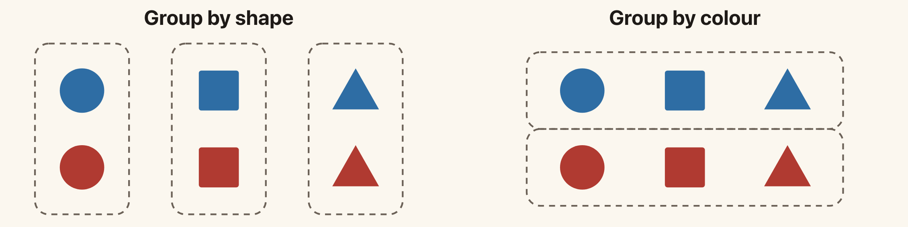
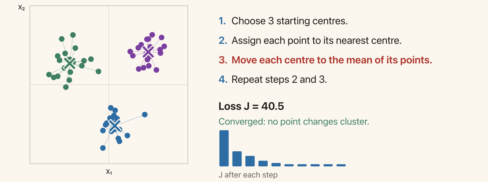
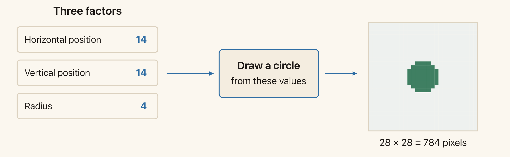
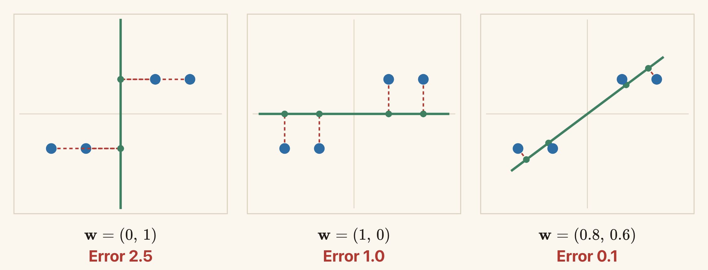
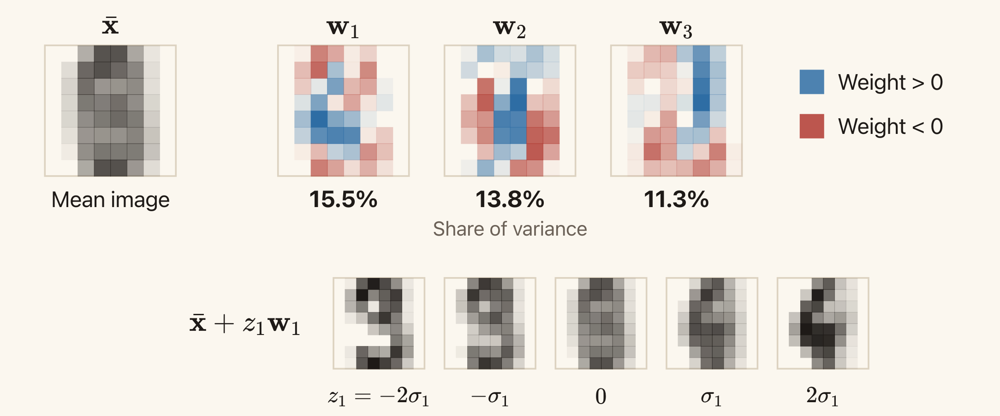
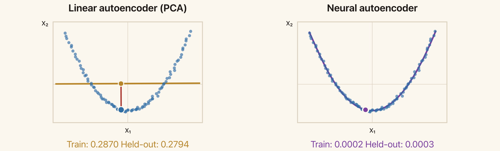
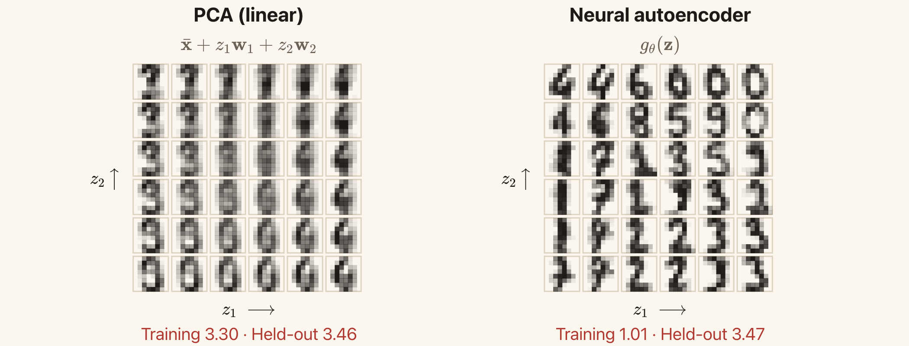
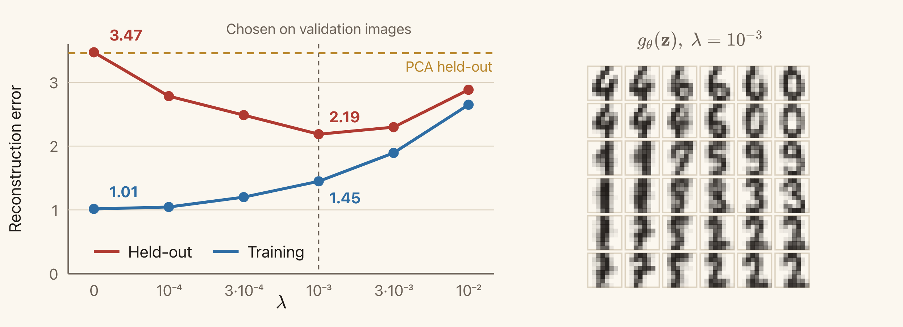

Lecture 9: Unsupervised Learning I — Clustering and Representation Learning
Summary of Key Ideas
In the earlier lectures, we learnt models from examples with supplied targets. For regression, the target was a number. For classification, it was a class label. Neural networks allowed us to learn features that helped predict those targets.
Now suppose we have observations but no supplied targets. We might have photographs without class labels, documents without topic labels, or measurements without a prediction task. What should a model learn from them?
This is the setting of unsupervised learning. We still need data, a model, and a loss. We must also choose what we want to learn from the observations.
We will study two tasks. In clustering, we divide observations into groups. The result depends on what we mean by similarity. The k-means algorithm uses squared distance to a cluster centre. It alternates between assigning points to centres and moving the centres. Each step minimises the same loss while keeping the other variables fixed.
In representation learning, we learn a code that describes each observation. An autoencoder learns its code by reconstructing the input. An encoder maps the input to the code, and a decoder maps the code to a reconstruction. We train both functions to reduce reconstruction error. We will learn about both linear and neural autoencoder models where the former has a direct connection to the famous principal component analysis (PCA). We will also learn about the different regularization techniques that can be used to prevent overfitting for the nonlinear models.
Learning Objectives
By the end of this lesson, you should be able to:
- Explain why clustering needs a definition of similarity.
- Explain how the assignment and update steps of k-means minimise its loss.
- Describe an autoencoder and its reconstruction loss.
- Relate a linear autoencoder to PCA, including the connection between reconstruction error and retained variance.
- Explain how the decoder, architecture, and regularisation affect the learned codes.
Unsupervised Learning
Data Without Supplied Targets
A supervised dataset contains input–target pairs:
\[\mathcal{D}=\{(\mathbf{x}_n,t_n)\}_{n=1}^{N}.\]
The target tells us what to predict. The loss measures how far our prediction is from that target.
An unsupervised dataset contains observations:
\[\mathcal{D}=\{\mathbf{x}_n\}_{n=1}^{N}, \qquad \mathbf{x}_n\in\mathbb{R}^{D}.\]
Here N is the number of observations and D is the number of input coordinates. There is no supplied target t_n. We must decide what task to construct from the observations.
Some common goals are:
| Goal | What we want to learn | Example |
|---|---|---|
| Clustering | Groups of similar observations | Group customers by what they buy |
| Representation learning | Features that describe an observation | Represent an image by a vector of numbers |
| Density modelling | A probability distribution over observations | Estimate which inputs are likely |
| Generative modelling | A model that can produce new observations | Generate images resembling the training images |
These goals can be related. For example, learned features may make clustering easier. A probability model may also provide a way to generate data.
The data alone do not tell us which task to choose. After choosing a task, we still need a model, a loss, and a method for learning the model's parameters.
Self-Supervised Learning
The observations can sometimes provide their own targets. Consider the sentence
The cat sat on the mat.
We can use “The cat sat on the” as an input and “mat” as its prediction target. Repeating this construction across a text collection gives many training examples.
A language model can learn a conditional distribution of the form
\[p_{\theta}(\text{next token}\mid\text{previous tokens}).\]
A token may be a word or part of a word. We use whole words in this example to keep the construction simple.
This is self-supervised learning: the training targets come from the observed data. A person does not have to provide a separate next-token label for each example. Later stages of training can use other information, such as labelled demonstrations.
Autoencoders use a similar idea. Their target is the input itself. They are commonly studied under unsupervised learning, and their reconstruction task is self-supervised.
Clustering and K-Means
What Makes Two Observations Similar?
Suppose we have six objects: a circle, a square, and a triangle, each in blue and red. We could group them by shape, giving three groups. We could group them by colour, giving two groups.

Both groupings describe the same objects. Choosing between them requires a definition of similarity.
Clustering asks us to find groups whose members are similar. Until we specify what similarity means, the task is underspecified. Different choices can give different answers.
This also happens with numerical data. If we group customers using purchase records, should similarity depend on the total amount spent, the kinds of products bought, or how often they shop? Our choice of features and distance affects the answer.
Supervised learning also needs modelling assumptions. The difference is that its supplied targets already identify a prediction task. In clustering, choosing what counts as a useful group is part of defining the task.
The K-Means Model
In k-means, we choose a number of clusters K. Each cluster has a centre:
\[\boldsymbol{\mu}_1,\ldots,\boldsymbol{\mu}_K\in\mathbb{R}^{D}.\]
We also assign each observation to exactly one cluster. Define
\[r_{nk}= \begin{cases} 1 & \text{if observation }n\text{ belongs to cluster }k,\\ 0 & \text{otherwise}. \end{cases}\]
For each observation,
\[r_{nk}\in\{0,1\}, \qquad \sum_{k=1}^{K}r_{nk}=1.\]
The vector \mathbf{r}_n=(r_{n1},\ldots,r_{nK}) is a one-of-K assignment, also called a one-hot assignment. For example, (0,1,0) assigns the observation to cluster 2.
The centres describe the groups. The assignments say which group each observation belongs to. Learning determines both.
Here K means the number of clusters. Later, in the autoencoder sections, we will use K for the number of coordinates in a code. These are separate modelling choices.
The Loss
A point should be close to its assigned centre. K-means measures this using squared Euclidean distance:
\[\boxed{ J(\mathbf{r},\boldsymbol{\mu}) =\sum_{n=1}^{N}\sum_{k=1}^{K} r_{nk}\|\mathbf{x}_n-\boldsymbol{\mu}_k\|^2. }\]
Only one r_{nk} is 1 for each point, so each point contributes one squared distance. A smaller loss means that the points are closer to their assigned centres in total.
We want to minimise J over both the assignments and the centres. Solving for both at once is difficult. K-means instead alternates between two simpler problems:
- Keep the centres fixed and choose the assignments.
- Keep the assignments fixed and choose the centres.
Assignment Step: Choose the Nearest Centre
When the centres are fixed, the assignment of one point does not affect the contribution of another. For point \mathbf{x}_n, we need to choose which squared distance to include in the loss.
Choose
\[k_n=\arg\min_{j\in\{1,\ldots,K\}} \|\mathbf{x}_n-\boldsymbol{\mu}_j\|^2,\]
then set
\[r_{nk}= \begin{cases} 1 & k=k_n,\\ 0 & k\ne k_n. \end{cases}\]
This assigns the point to its nearest centre. If two centres are equally close, choose one using a consistent rule. The one-of-K constraint still requires exactly one assignment.
This step minimises J over the assignments for the current centres.
Update Step: Compute the Mean
Now keep the assignments fixed. The terms involving centre \boldsymbol{\mu}_k are
\[J_k(\boldsymbol{\mu}_k) =\sum_{n=1}^{N}r_{nk} \|\mathbf{x}_n-\boldsymbol{\mu}_k\|^2.\]
Different centres appear in separate terms, so we can optimise them independently. Differentiate with respect to \boldsymbol{\mu}_k:
\[\nabla_{\boldsymbol{\mu}_k}J_k =-2\sum_{n=1}^{N}r_{nk} (\mathbf{x}_n-\boldsymbol{\mu}_k).\]
Setting the derivative to zero gives
\[\sum_n r_{nk}\mathbf{x}_n =\left(\sum_n r_{nk}\right)\boldsymbol{\mu}_k.\]
Thus
\[\boxed{ \boldsymbol{\mu}_k =\frac{\sum_n r_{nk}\mathbf{x}_n} {\sum_n r_{nk}} }.\]
The denominator is the number of points assigned to cluster k. The numerator is their sum. The best centre is therefore their mean.
For a nonempty cluster, this quadratic loss has positive curvature, so the stationary point is its minimum. If a cluster has no assigned points, the formula has a zero denominator. An implementation must handle that case, for example by keeping the old centre or choosing a new starting point.
A Numerical Example
Consider four one-dimensional observations:
\[1,\quad 2,\quad 8,\quad 9.\]
Let K=2, with initial centres \mu_1=0 and \mu_2=10.
The assignment step puts 1 and 2 in cluster 1, and 8 and 9 in cluster 2. The loss is
\[J=(1-0)^2+(2-0)^2+(8-10)^2+(9-10)^2=10.\]
The update step replaces the centres with the means:
\[\mu_1=\frac{1+2}{2}=1.5, \qquad \mu_2=\frac{8+9}{2}=8.5.\]
The new loss is
\[J=(1-1.5)^2+(2-1.5)^2+(8-8.5)^2+(9-8.5)^2=1.\]
The next assignment step leaves the groups unchanged, and the next update leaves the centres unchanged. The algorithm has converged.
Why the Loss Cannot Increase
The assignment step chooses the best assignments for the current centres. Keeping the old assignments was one available option, so the new assignments cannot give a larger loss.
The same argument applies to the update step. Keeping the old centres was an available option, so replacing them with the cluster means cannot increase the loss.
Thus the sequence of losses satisfies
\[J^{(0)}\ge J^{(1)}\ge J^{(2)}\ge\cdots\ge 0.\]
The loss decreases or stays the same, and it is bounded below by zero. The loss values therefore converge. In the usual algorithm, we stop once the assignments no longer change. Consistent handling of distance ties avoids unnecessary changes between equally good assignments.
This does not mean that k-means finds the global minimum. The two steps optimise different variables in turn. A different initial choice of centres can lead to a different final grouping and a different loss.
A common approach is to run k-means from several initial choices of centres and keep the result with the smallest J.

Each point has the colour of its assigned cluster. The crosses show the centres. The loss cannot increase during an assignment or update step.
Optional exploration: use the k-means demo to run one step at a time. Predict which points will change cluster before the next assignment step. Then try a new start and compare the final losses.
Assumptions and Limitations
K-means makes several choices explicit.
First, we supply K. The algorithm does not decide how many groups we want. Increasing K cannot increase the smallest achievable training loss, since extra centres can represent more points separately. Training loss alone therefore does not tell us which K is useful.
Second, assignments are hard: each point belongs to exactly one cluster. This can be restrictive when a point lies between overlapping groups.
Third, ordinary squared distance treats the input coordinates according to their numerical scales. Rescaling a feature can change the groups. For example, changing a length measurement from metres to millimetres multiplies its contribution to squared distance by a million. Choosing features and scales is part of choosing similarity.
Finally, representing each cluster by one centre works best for compact groups. K-means often works poorly when groups have very different spreads or form long, curved shapes. A point from a broad group may be closer to another group's centre. The nearest-centre assignment then disagrees with the grouping we intended.
The example of unequal cluster spreads shows this effect. Gaussian mixture models provide a probabilistic alternative with soft assignments and more flexible cluster shapes. We will study them later.
Representation Learning and Autoencoders
Many Measurements, Few Underlying Variables
Consider a 28\times28 image of a circle on a fixed background. The image contains
\[28\times28=784\]
pixel values. Yet three numbers can describe how to draw it: the horizontal position, vertical position, and radius.

The image has 784 pixel values, but this example varies only three quantities. The drawing function converts those quantities into pixels.
The three numbers are a representation of the image. They describe it more compactly than the full list of pixels.
Here we already know how the image is produced. In a learning problem, we usually receive only the observations. We would like to learn a useful representation from them.
Optional exploration: change the position and radius in the circle demo. Notice that moving one control changes many pixel values.
The Encoder and the Code
A representation-learning model maps an input to a feature vector:
\[\mathbf{z}=f_{\phi}(\mathbf{x}), \qquad f_{\phi}:\mathbb{R}^{D}\to\mathbb{R}^{K}.\]
We call f_{\phi} the encoder and \mathbf{z} the code. The parameters \phi determine the encoder's computation.
Often we choose K<D, so the code contains fewer numbers than the input. For example, an 8\times8 greyscale image has D=64 pixel values. We might learn a code with K=2 coordinates.
A representation does not have to be smaller than the input. The choice K<D is one restriction we will use in this lecture.
In Lecture 7, we learnt features to help predict a supplied target. The prediction loss told the network which features were useful. With unlabelled data, we need another objective.
Reconstruction as a Training Task
An autoencoder adds a decoder:
\[g_{\theta}:\mathbb{R}^{K}\to\mathbb{R}^{D}.\]
The decoder takes the code and produces a reconstruction \hat{\mathbf{x}} of the input:
\[\boxed{ \mathbf{z}=f_{\phi}(\mathbf{x}), \qquad \hat{\mathbf{x}}=g_{\theta}(\mathbf{z}). }\]
The full computation is
\[\mathbf{x} \;\xrightarrow{\ f_{\phi}\ }\; \mathbf{z} \;\xrightarrow{\ g_{\theta}\ }\; \hat{\mathbf{x}}.\]
The encoder and decoder have different roles. The encoder chooses a description of the input. The decoder uses that description to reconstruct it.
When K<D, the intermediate code is a bottleneck. The decoder receives fewer numbers for each observation than the original input contained. It also has its learned parameters, which are shared across observations. For example, those shared parameters could describe a common shape, while each code specifies how that shape varies in one image.
Reconstruction Loss
We train the encoder and decoder together by comparing the reconstruction with the input. With squared error,
\[\boxed{ J(\phi,\theta) =\frac{1}{N}\sum_{n=1}^{N} \left\|\mathbf{x}_n-g_{\theta}(f_{\phi}(\mathbf{x}_n))\right\|^2. }\]
The input supplies its own target. No separate class label is needed.
If \hat{\mathbf{x}}_n is close to \mathbf{x}_n, the code contains enough information for the decoder to reconstruct that observation accurately. Training encourages the code to preserve information that reduces this error.
This does not guarantee that the code preserves everything useful for another task. For example, a large background region can contribute more to pixel reconstruction error than a small object that determines an image's class. We should evaluate the learned features on the task for which we want to use them.
As in Lecture 2, squared error corresponds to a Gaussian noise model with equal variance across coordinates. We can also use squared error directly as a measure of reconstruction quality. Other losses will express different preferences.
Inspecting Learned Codes
With a two-dimensional code, we can plot each encoded observation as a point (z_1,z_2). Similar codes are close in this plot. We can also choose a code and pass it to the decoder to see the reconstructed image.
The digit-code demo does this for 8\times8 handwritten digits. The plotted symbols identify which digit each test image contains. These labels help us read the plot, but the model did not use them during training.
A learned coordinate need not correspond to a property we can name, such as position or stroke width. Different encoders and decoders can reconstruct the same observations using different codes.
A Linear Autoencoder and PCA
A Running Example
Consider four observations in two dimensions:
\[\mathbf{x}_1=\begin{bmatrix}2\\1\end{bmatrix},\quad \mathbf{x}_2=\begin{bmatrix}1\\1\end{bmatrix},\quad \mathbf{x}_3=\begin{bmatrix}-1\\-1\end{bmatrix},\quad \mathbf{x}_4=\begin{bmatrix}-2\\-1\end{bmatrix}.\]
Their mean is zero, so the data are already centred. We want to describe each point using one number, then reconstruct the point from that number.
The points lie near a line through the origin. We could use a point's position along a chosen line as its code. The decoder would then reconstruct a point on that line.
Linear Encoder and Decoder
A linear autoencoder uses two matrices:
\[\mathbf{z}=\mathbf{W}_e\mathbf{x}, \qquad \hat{\mathbf{x}}=\mathbf{W}_d\mathbf{z},\]
where
\[\mathbf{W}_e\in\mathbb{R}^{K\times D}, \qquad \mathbf{W}_d\in\mathbb{R}^{D\times K}.\]
The encoder maps D input coordinates to K code coordinates. The decoder maps those K coordinates back to D output coordinates.
For our two-dimensional example, D=2 and K=1. Choose a unit vector \mathbf{w} along the reconstruction line and set
\[\mathbf{W}_e=\mathbf{w}^{\top}, \qquad \mathbf{W}_d=\mathbf{w}, \qquad \|\mathbf{w}\|=1.\]
The encoder computes the coordinate along the line:
\[z=\mathbf{w}^{\top}\mathbf{x}.\]
The decoder reconstructs the point as
\[\hat{\mathbf{x}}=\mathbf{w}z.\]
These formulas give the orthogonal projection of \mathbf{x} onto the line. The unit-length condition matters: it makes z the coordinate along a unit direction.
Encoding and Decoding One Point
Choose
\[\mathbf{w}=\begin{bmatrix}0.8\\0.6\end{bmatrix}.\]
It has unit length because 0.8^2+0.6^2=1. For \mathbf{x}=(2,1)^{\top}, the code is
\[z=0.8(2)+0.6(1)=2.2.\]
Decoding gives
\[\hat{\mathbf{x}} =\begin{bmatrix}0.8\\0.6\end{bmatrix}(2.2) =\begin{bmatrix}1.76\\1.32\end{bmatrix}.\]
The residual, or reconstruction error vector, is
\[\mathbf{x}-\hat{\mathbf{x}} =\begin{bmatrix}0.24\\-0.32\end{bmatrix}.\]
Its squared length is
\[\|\mathbf{x}-\hat{\mathbf{x}}\|^2 =0.24^2+(-0.32)^2=0.16.\]
The reconstruction lies on the chosen line. The residual is perpendicular to it. The component of the input perpendicular to the line cannot be represented by this decoder.
Different Lines Give Different Errors
We choose the line by minimising the average reconstruction error over all four observations:
\[J(\mathbf{w}) =\frac{1}{N}\sum_{n=1}^{N} \|\mathbf{x}_n-\mathbf{w}\mathbf{w}^{\top}\mathbf{x}_n\|^2, \qquad \|\mathbf{w}\|=1.\]
For three possible directions, the errors are:
| Direction \mathbf{w} | Reconstruction line | Average squared error |
|---|---|---|
| (0,1)^{\top} | Vertical | 2.5 |
| (1,0)^{\top} | Horizontal | 1.0 |
| (0.8,0.6)^{\top} | Sloping | 0.1 |
For the vertical line, each reconstruction has horizontal coordinate zero. The residuals therefore contain the original horizontal coordinates, whose mean squared value is (4+1+1+4)/4=2.5.
For the horizontal line, each reconstruction has vertical coordinate zero. Every point has squared vertical coordinate 1, giving average error 1.
The sloping line gives a much smaller error because it follows the direction in which these points vary most.

The dashed segments connect each observation to its reconstruction. The sloping line has the smallest error among these three choices.
For separate linear encoder and decoder matrices, the loss is
\[J(\mathbf{W}_e,\mathbf{W}_d) =\frac{1}{N}\sum_{n=1}^{N} \|\mathbf{x}_n-\mathbf{W}_d\mathbf{W}_e\mathbf{x}_n\|^2.\]
Optional exploration: rotate the line in the PCA demo. Predict which direction will reduce the error, then use “Fit PCA” to check. The demo uses a larger dataset than our four-point example.
Centring the Data
The example above has mean zero. For general data, first compute the training mean
\[\bar{\mathbf{x}}=\frac{1}{N}\sum_{n=1}^{N}\mathbf{x}_n\]
and subtract it:
\[\tilde{\mathbf{x}}_n=\mathbf{x}_n-\bar{\mathbf{x}}.\]
Fit the line to these centred observations. Encoding and reconstruction then become
\[z=\mathbf{w}^{\top}(\mathbf{x}-\bar{\mathbf{x}}), \qquad \hat{\mathbf{x}}=\bar{\mathbf{x}}+\mathbf{w}z.\]
Adding the mean back places the reconstruction line through the data mean. Use the same training mean when encoding new observations.
In the derivation below, \mathbf{x}_n denotes a centred observation, as it does in the slides.
Reconstruction Error and Variance
Let
\[z_n=\mathbf{w}^{\top}\mathbf{x}_n, \qquad \hat{\mathbf{x}}_n=\mathbf{w}z_n, \qquad \mathbf{e}_n=\mathbf{x}_n-\hat{\mathbf{x}}_n.\]
Since \|\mathbf{w}\|=1,
\[\mathbf{w}^{\top}\mathbf{e}_n =\mathbf{w}^{\top}\mathbf{x}_n -\mathbf{w}^{\top}\mathbf{w}z_n =z_n-z_n=0.\]
The reconstruction and residual are perpendicular. Pythagoras gives
\[\|\mathbf{x}_n\|^2 =\|\hat{\mathbf{x}}_n\|^2+\|\mathbf{e}_n\|^2 =z_n^2+\|\mathbf{e}_n\|^2.\]
For the point (2,1)^{\top}, this is
\[5=4.84+0.16.\]
Applying the same calculation to all four points gives:
| Point | Squared length |\mathbf{x}_n|^2 | Retained z_n^2 | Squared error |\mathbf{e}_n|^2 |
|---|---|---|---|
| (2,1) | 5 | 4.84 | 0.16 |
| (1,1) | 2 | 1.96 | 0.04 |
| (-1,-1) | 2 | 1.96 | 0.04 |
| (-2,-1) | 5 | 4.84 | 0.16 |
| Average | 3.5 | 3.4 | 0.1 |
Because the observations are centred, their total variance, using the factor 1/N, is
\[\frac{1}{N}\sum_n\|\mathbf{x}_n\|^2.\]
This is the sum of the variances of the input coordinates. The codes also have mean zero, so their variance is \frac{1}{N}\sum_n z_n^2.
Averaging the Pythagorean identity and rearranging gives
\[\boxed{ \text{reconstruction error} =\text{total variance}-\text{retained variance}. }\]
The total variance is fixed by the data. Therefore, minimising reconstruction error is equivalent to maximising retained variance.
Principal Component Analysis
Define the covariance matrix of the centred observations as
\[\mathbf{S}=\frac{1}{N}\sum_{n=1}^{N} \mathbf{x}_n\mathbf{x}_n^{\top}.\]
The variance of the codes along direction \mathbf{w} is
\[\frac{1}{N}\sum_n z_n^2 =\frac{1}{N}\sum_n(\mathbf{w}^{\top}\mathbf{x}_n)^2 =\mathbf{w}^{\top}\mathbf{S}\mathbf{w}.\]
We want to maximise this quantity subject to \|\mathbf{w}\|=1.
Let \mathbf{u}_j be orthonormal eigenvectors of \mathbf{S}, with eigenvalues \lambda_j. Write a unit vector as
\[\mathbf{w}=\sum_j a_j\mathbf{u}_j, \qquad \sum_j a_j^2=1.\]
Then
\[\mathbf{w}^{\top}\mathbf{S}\mathbf{w} =\sum_j a_j^2\lambda_j \leq\max_j\lambda_j.\]
We reach this maximum by choosing an eigenvector with the largest eigenvalue. This gives the first principal direction. Its projected coordinates are the first principal component scores.
For our four points,
\[\mathbf{S} =\begin{bmatrix}2.5&1.5\\1.5&1\end{bmatrix}.\]
Its largest eigenvalue is approximately 3.427, with a unit eigenvector approximately
\[\mathbf{w}_{\mathrm{PCA}} =\begin{bmatrix}0.851\\0.526\end{bmatrix}.\]
The total variance is 3.5. The minimum reconstruction error is therefore approximately
\[3.5-3.427=0.073.\]
Our earlier direction (0.8,0.6)^{\top} was close to the optimum, but its error of 0.1 was slightly larger.
The signs of a principal direction and its code can both be reversed without changing the reconstruction. If eigenvalues tie, more than one choice of principal directions can be equally good.
More Than One Code Coordinate
For a K-dimensional code, collect the K leading orthonormal eigenvectors in
\[\mathbf{W}\in\mathbb{R}^{D\times K}, \qquad \mathbf{W}^{\top}\mathbf{W}=\mathbf{I}_K.\]
For centred data,
\[\boxed{ \mathbf{z}=\mathbf{W}^{\top}\mathbf{x}, \qquad \hat{\mathbf{x}}=\mathbf{W}\mathbf{z}. }\]
For uncentred data, subtract the training mean before encoding and add it back after decoding.
If the eigenvalues are ordered from largest to smallest, PCA retains variance \sum_{j=1}^{K}\lambda_j. Its average squared reconstruction error is the sum of the remaining eigenvalues:
\[J_{\min}=\sum_{j=K+1}^{D}\lambda_j.\]
A linear autoencoder with separate encoder and decoder matrices can recover the same reconstruction subspace at a global minimum of squared loss. Its code coordinates need not be the usual PCA coordinates. Changing the basis of the code and making the corresponding change in the decoder can leave every reconstruction unchanged.
PCA does not require Gaussian data. The derivation uses centring, orthogonal projection, and squared error.
PCA on Images
An 8\times8 greyscale digit image is a vector with 64 coordinates. A principal direction also has 64 entries, so we can arrange its entries in an 8\times8 grid and display them as an image.
The mean image describes the average pixel values. A principal direction describes a pattern of changes from that mean. Some entries can be positive and others negative.
With one code coordinate,
\[\hat{\mathbf{x}}=\bar{\mathbf{x}}+z_1\mathbf{w}_1.\]
Increasing z_1 adds more of the first direction. Negative values subtract it. With two coordinates,
\[\hat{\mathbf{x}} =\bar{\mathbf{x}}+z_1\mathbf{w}_1+z_2\mathbf{w}_2.\]

The first three directions retain about 15.5%, 13.8%, and 11.3% of the training variance. In the bottom row, only the first code coordinate changes. The other coordinates are zero.
These directions were fitted to 1,000 training images. The quantity \sigma_1 in the figure is the training standard deviation of the first code coordinate. The PCA image slide shows the same example.
The Restriction Imposed by a Linear Decoder
For a linear decoder, the possible centred reconstructions are
\[\{\mathbf{W}_d\mathbf{z}:\mathbf{z}\in\mathbb{R}^{K}\}.\]
They lie in the subspace spanned by the columns of \mathbf{W}_d. With one independent column, this is a line. With two independent columns, it is a plane. More generally, its dimension is at most K.
Learning can change which subspace we use. It cannot make a linear decoder produce a curve within a one-dimensional code model. This restriction is an inductive bias: it limits the relationships the model can represent.
Feature scaling is another choice that affects the result. Since squared error uses numerical coordinate differences, rescaling a feature can change the principal directions. Standardising features by their training standard deviations is one option. Whether that is appropriate depends on what errors should matter for the task.
Neural Autoencoders
A Nonlinear Decoder Can Reconstruct a Curve
Suppose the observations lie on the curve
\[\mathbf{x}=\begin{bmatrix}z\\z^2\end{bmatrix}.\]
Each point has two coordinates, but one number z determines both. A linear decoder with a one-dimensional code cannot reconstruct the whole curve. A nonlinear decoder can.
For this example, we can write down an exact encoder and decoder:
\[f(\mathbf{x})=x_1, \qquad g(z)=\begin{bmatrix}z\\z^2\end{bmatrix}.\]
For \mathbf{x}=(1,1)^{\top}, the encoder produces z=1. The decoder maps that code back to (1,1)^{\top}. The same construction works for every point on the curve.
Usually, we do not know these functions in advance. A neural autoencoder represents them using neural networks:
\[\mathbf{z}=f_{\phi}(\mathbf{x}), \qquad \hat{\mathbf{x}}=g_{\theta}(\mathbf{z}).\]
For example, both functions could be MLPs. Their nonlinearities allow the reconstructions to lie on a curve or a curved surface.
The curve demo shows the known function g(z)=(z,z^2)^{\top}. Changing z moves the point along the curve. Adding noise shows why real observations might lie near a curve rather than exactly on it.
Training Both Networks
We can use the same squared reconstruction loss as before:
\[J(\phi,\theta) =\frac{1}{N}\sum_{n=1}^{N} \|\mathbf{x}_n-g_{\theta}(f_{\phi}(\mathbf{x}_n))\|^2.\]
For each input, the encoder computes a code, the decoder computes a reconstruction, and the loss compares that reconstruction with the input. Backpropagation computes gradients through both networks. Gradient descent or another gradient-based optimiser updates both sets of parameters.
The model changes from the linear autoencoder. The reconstruction task can remain the same.
Comparing Linear and Neural Reconstructions
Consider a separate dataset of observations near a curve. We fit both a linear autoencoder and a neural autoencoder, each with one code coordinate.

The linear reconstructions lie on a line. The neural reconstructions follow a curve. The highlighted observation and its reconstruction show the error for one input.
In this experiment, the neural network has layer widths 2,12,1,12,2. The single central unit is the code. Both models use 96 training points and are evaluated on 95 separate test points.
| Model | Training reconstruction error | Test reconstruction error |
|---|---|---|
| Linear autoencoder (PCA) | 0.2870 | 0.2794 |
| Neural autoencoder | 0.0002 | 0.0003 |
The errors are average squared Euclidean distances. The neural model's lower test error shows that its additional flexibility helps on this dataset. It does not imply that a neural autoencoder will always outperform PCA.
Optional exploration: use the linear and neural reconstruction demo to select a point and show the residuals. Compare training and test observations.
Architecture and Inductive Bias
We must choose the computations inside the encoder and decoder. The architectures from Lectures 7 and 8 express different assumptions.
An MLP uses fully connected layers. In one dense layer, every input coordinate can affect every output unit, with a separate weight for each connection. This gives flexibility but does not explicitly use an image's spatial structure.
A CNN uses local filters with shared weights. Nearby pixels contribute to the same local computation, and the filter applies at multiple locations. This is useful when local patterns can occur in different parts of an image. A convolutional decoder can also share parameters when constructing different parts of an output image.
A Transformer uses attention weights that depend on the input. It can combine information from distant positions, with the contribution of another position changing according to the current input. Position information is needed when order or spatial arrangement matters.
These choices apply to both the encoder and the decoder. The encoder determines how the code is computed. The decoder determines which reconstructions that code can produce.
Overfitting and Regularisation
A Small Code Can Still Overfit
An autoencoder with K<D is called undercomplete. Its small code restricts how many numbers pass from the encoder to the decoder, but this alone does not prevent memorisation.
A real-valued coordinate can take many distinct values. A sufficiently flexible encoder can assign different codes to the training examples. A sufficiently flexible decoder can learn to reconstruct those examples from their codes. It may still reconstruct new inputs poorly.
The capacity of both functions matters, as well as the size of the code. This is why we evaluate reconstruction on data that were not used to fit the model.
Example: Handwritten Digits
The digit experiment uses 1,797 images with 8\times8 pixels. Pixel values are scaled to the interval [0,1]. We split the data into:
- 1,000 training images for fitting the model;
- 200 validation images for choosing the regularisation strength;
- 597 test images for evaluating the chosen model.
Both PCA and the neural autoencoder use a two-dimensional code. The neural network has layer widths 64,128,2,128,64.
Without regularisation, the errors are:
| Model | Training error | Test error |
|---|---|---|
| PCA, K=2 | 3.30 | 3.46 |
| Neural autoencoder, K=2 | 1.01 | 3.47 |
Here, error means the average over images of the sum of 64 squared pixel errors. It is not the average per pixel.
The neural model fits the training images much better than PCA, but their test errors are almost the same. The gap between the neural model's training and test errors shows overfitting, despite its small code.
We can also inspect the decoders by choosing a grid of two-dimensional codes and reconstructing an image at each grid point.

The neural decoder produces more recognisable digit shapes at many grid points, but its test reconstruction error is similar to PCA's. Visual appearance and reconstruction error provide different information.
These are outputs for chosen codes. They are not random samples from a learned probability distribution over images. An ordinary autoencoder does not specify how often each code should occur.
Adding a Penalty
Regularisation adds a preference beyond fitting the training data. Write
\[\boxed{ J_{\mathrm{reg}}(\phi,\theta) =\frac{1}{N}\sum_{n=1}^{N} \|\mathbf{x}_n-g_{\theta}(f_{\phi}(\mathbf{x}_n))\|^2 +\lambda\,\Omega, }\]
where \Omega is a penalty and \lambda\ge0 controls its strength.
A larger \lambda gives the penalty more influence during training. Too much regularisation can make the model underfit. We choose \lambda using validation data.
Penalties on Weights
As in ridge regression, we can penalise squared weights:
\[\Omega_{\mathrm{weights}}=\|\phi\|^2+\|\theta\|^2.\]
Here the norms represent sums of squares of the weights being penalised. Bias terms can be excluded, as they are in the digit experiment.
The penalty discourages large weights. Under ordinary gradient descent, a weight w receives a contribution 2\lambda w to its gradient from this penalty. Its update includes the factor 1-2\eta\lambda, which shrinks the old weight when the step size \eta is small enough. This explains the name weight decay in this setting.
Penalties on Code Values
We can encourage sparse codes using an absolute-value penalty:
\[\Omega_{\mathrm{sparse}} =\sum_{n=1}^{N}\sum_{k=1}^{K}|z_{nk}|.\]
Here z_{nk} is coordinate k of the code for observation n. The penalty encourages many code entries to be small or zero. This is different from reducing K: a long code can still be sparse if only a few entries are active for each input.
Penalties on Sensitivity
We may want small changes in the input to produce small changes in its code. One penalty is
\[\Omega_{\mathrm{sensitivity}} =\sum_{n=1}^{N}\sum_{k=1}^{K}\sum_{d=1}^{D} \left( \frac{\partial f_{\phi,k}(\mathbf{x}_n)}{\partial x_{nd}} \right)^2.\]
The derivative measures how code coordinate k responds to a change in input coordinate d, evaluated at observation n. Penalising these derivatives encourages the encoder to be less sensitive to small input changes near the training observations. This is the idea behind a contractive autoencoder.
These penalties have different effects. Weight penalties act on model parameters. Sparsity penalties act on code values. Sensitivity penalties act on how codes change with the input.
The code penalties above are sums over training observations, matching the slides. If we instead average them over observations, we must adjust \lambda to obtain the same overall penalty strength.
Weight Decay in the Digit Experiment
The digit experiment trains the same network with several squared-weight penalty strengths. The smallest validation error occurs at \lambda=10^{-3}.
| Model | Training error | Validation error | Test error |
|---|---|---|---|
| No weight penalty, \lambda=0 | 1.01 | 3.23 | 3.47 |
| Chosen penalty, \lambda=10^{-3} | 1.45 | 2.17 | 2.19 |
| Stronger penalty, \lambda=10^{-2} | 2.65 | 2.84 | 2.88 |
These numbers report reconstruction error only. They exclude the penalty term used during training.
With the chosen penalty, training error increases from 1.01 to 1.45, but test error falls from 3.47 to 2.19. The model fits the training images less closely and reconstructs new images more accurately.
Increasing the penalty further raises both validation and test error. The stronger restriction prevents the model from fitting useful structure as well.

The dashed vertical line marks the penalty selected using validation data. The horizontal dashed line is PCA's test error. The images on the right come from the selected neural decoder.
The weight-decay slide shows this comparison. We use the validation set to select the penalty and the test set to assess the selected model, as in Lecture 5.
Further Reading: Other Losses and Training Tasks
The main lecture uses squared reconstruction error. We can also change how errors are measured, or construct a different task from the inputs. These are the extensions in the additional slides.
Other Reconstruction Losses
Squared error adds squared coordinate differences:
\[\ell(\mathbf{x},\hat{\mathbf{x}}) =\sum_d(x_d-\hat{x}_d)^2.\]
Large errors receive a large penalty. With fixed noise variance, this corresponds to a Gaussian observation model.
Absolute error uses
\[\ell(\mathbf{x},\hat{\mathbf{x}}) =\sum_d|x_d-\hat{x}_d|.\]
It grows linearly with the size of an error, so an extreme error has less influence than under squared loss. It corresponds to a Laplace noise model with fixed scale.
Binary cross-entropy is appropriate when each target coordinate is binary and the decoder predicts its probability. For x_d\in\{0,1\} and 0<\hat{x}_d<1,
\[\ell(\mathbf{x},\hat{\mathbf{x}}) =-\sum_d\left[ x_d\log\hat{x}_d+(1-x_d)\log(1-\hat{x}_d) \right].\]
Here \hat{x}_d is the predicted probability that the target coordinate is 1. The output interpretation should agree with the loss.
Weighted squared error uses different positive weights for different coordinates:
\[\ell(\mathbf{x},\hat{\mathbf{x}}) =\sum_d a_d(x_d-\hat{x}_d)^2, \qquad a_d>0.\]
A larger a_d makes errors in coordinate d more costly. Choosing these weights is another way to express which differences matter.
Denoising Autoencoders
A denoising autoencoder receives a corrupted input but tries to reconstruct the clean observation. For additive noise,
\[\tilde{\mathbf{x}}=\mathbf{x}+\boldsymbol{\eta}.\]
The training objective is
\[\min_{\phi,\theta} \frac{1}{N}\sum_{n=1}^{N} \mathbb{E}_{\boldsymbol{\eta}}\left[ \|\mathbf{x}_n-g_{\theta}(f_{\phi}(\mathbf{x}_n+\boldsymbol{\eta}))\|^2 \right].\]
The expectation averages over the corruption we apply. We know the clean target because we start with an observation and add the noise ourselves.
This task encourages the model to use relationships among input coordinates to recover the original observation. For an image, neighbouring pixels and repeated shapes can help reconstruct a corrupted region.
Adding noise to the input is a separate choice from using squared error at the output. Squared error specifies how we score the reconstruction. Denoising specifies what information the encoder receives.
Masked Prediction
Another task hides part of an observation and asks the model to predict the missing part. For example, we can show the top half of a digit image and use the bottom half as the target.
The training data provide the hidden values before we mask them. The model must use the visible context to predict them. The same idea can be applied to missing words or image patches.
Contrastive Learning
We can also create two versions of the same observation, for example by shifting an image slightly. A contrastive objective encourages their representations to be similar and distinguishes them from representations of other observations.
The comparison with other observations matters. If we only asked the two codes to agree, an encoder could output the same constant code for every input. A contrastive objective includes a way to discourage this collapse.
The transformations express assumptions about what should stay the same. A small shift might preserve an image's identity, while a transformation that removes the object may not.
The input and target examples illustrate denoising, masking, and contrastive learning on a digit image. All three construct training tasks from the observations themselves.
Summary
Clustering begins with a definition of similarity. K-means uses squared distance to cluster centres and assigns each observation to exactly one centre. Its assignment and update steps each minimise the same loss over one set of variables. The loss cannot increase, but different initial centres can lead to different final solutions.
An autoencoder learns a representation by reconstructing its input. The encoder maps the input to a code. The decoder maps the code to a reconstruction. Reconstruction loss determines which errors training tries to reduce.
A linear decoder restricts reconstructions to a subspace. With squared error, the best subspace retains the greatest variance and is the PCA subspace. A nonlinear decoder can reconstruct points along a curve while still using a small code.
A small code alone does not prevent overfitting or guarantee useful features. We must also consider the capacity of the encoder and decoder, their architecture, and any regularisation. Validation data help us choose these settings. Separate test data tell us how well the chosen model reconstructs new observations.
Next, we will study variational autoencoders. These introduce probability distributions over latent variables and a probabilistic model of how those variables produce observations.
Reading
PRML — Christopher Bishop, Pattern Recognition and Machine Learning
- §9.1, K-means Clustering: the squared-distance objective and alternating updates.
- §12.1.1–12.1.2, PCA: maximum retained variance and minimum reconstruction error.
- §12.4.2, Autoassociative Neural Networks: the connection between autoencoders and dimensionality reduction.
The complete PRML textbook is available from the author. The probabilistic PCA and mixture-model derivations are beyond this lecture's scope.
Goodfellow, Bengio, and Courville, Deep Learning
Read the Chapter 14 introduction and §14.1–14.2 for undercomplete and regularised autoencoders. For optional reading, see §14.6 on manifold learning, §14.7 on contractive autoencoders, and Chapter 15 on representation learning.
Optional: An Introduction to Statistical Learning
Read Chapter 12 in the second R edition or the Python edition for PCA and clustering. The authors' website provides both editions.